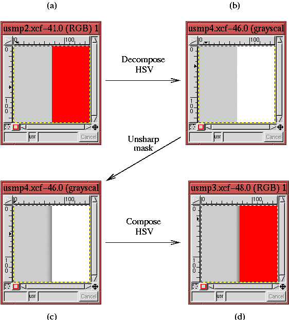

Due to a whole range of issues, the acquisition and digitization of an image can often produce a slightly blurred or out-of-focus result. Furthermore, the ensuing processing to improve tonal range and contrast can also deteriorate the crispness of the image. To remedy this, it is desirable to sharpen things up. Sharpening is usually applied at the end of the processing sequence after all other modifications have been made.
In the GIMP, there are two tools for sharpening an image; they are both located in the menu Image:Filters/Enhance. These tools are called Sharpen and Unsharp Mask. Although the underlying principles of the two are the same, I prefer Unsharp Mask because it has several parameters that have intuitive meanings and that provide more control over the sharpening process. The remainder of this section describes in detail how to use Unsharp Mask.
Before knowing the sharp, little grasshopper, you must first become one with the unsharp. Wheeew...that sounds like a bad episode of Kung Fu. I'm expecting David Carradine to peak out from behind my monitor any moment now! The truth is, though, that Unsharp Mask, as arcane and counter-intuitive as its name may sound, is an excellent tool for sharpening. The principle of the Unsharp Mask and the ins and outs of this special filter are covered in this section.
Figure 6.32
The red line in the upper graph of Figure 6.32 illustrates how the pixel values change if the row of pixels is blurred. The resulting red curve is a smoothed version of the original. If you viewed the row of pixels corresponding to this smooth curve, it would appear much less sharp than the pixels for the black curve. So, in essence, the red curve is an unsharp version of the black. Now, subtract the unsharp version from the original and the result is the lower black line in the top graph of Figure 6.32. You could say that this result is just the original curve with its unsharp component masked out.
This is the interpretation of what the unsharp mask does, but how does this sharpen the image? The answer is given by the lower graph of Figure 6.32, which shows the original black line representing the row of pixel values. The graph also shows a red curve, which is the original curve and the associated unsharp masked version added to it. As you can see, just before the edge, there is now a dip in pixel value at the low side of the transition and a peak on the high side. Thus, the result is that the edge has been made sharper.
So much for the theory of the Unsharp Mask. A simple example
brings out the practical effects of this filter. Unsharp
Mask can be found in the Image:Filters/Enhance menu.
Figure 6.33(a)
Note that in the sharpened result (see Figure 6.33(b)), there is a light halo on the right side of the edge and a deep shadow on the dark side of the edge. This corresponds to the discussion of the red curve in the lower graph of Figure 6.32. The effect of the Unsharp Mask is very pronounced but was chosen to clearly illustrate the effect. In general, the dialog parameters are chosen to produce more subtle results.
The Unsharp Mask dialog has three parameters. Looking at the dialog in Figure 6.33(c), there is Radius, which specifies the relative width of the halo/shadow created by the mask. The parameter named Amount controls the relative magnitude of the dip and the peak created on each side of the edge. Finally, Threshold specifies the difference in pixel values that must exist across the edge for the Unsharp Mask to be applied. Thus, if Threshold is set to 25, adjacent pixels whose difference in pixel value is less than 25 are not sharpened. An important fact is that the Unsharp Mask is applied individually to each color channel, R, G, and B; the results are then combined.
Figure 6.34
The choice of parameters used to obtain the results in Figure 6.34 was obtained by trial and error. Using Undo (C-z) in conjunction with the keyboard shortcut that recalls the last applied filter (A-S-f ), it was possible to apply the Unsharp Mask repeatedly, experimenting with values. In this way, it was possible to obtain just the desired effect.
What parameter values should be used with the Unsharp Mask? The answer depends on the image, of course. However, one rule of thumb is the Radius of the mask should be small--2 to 4 pixels wide. This is because the halo and shadow created by the Unsharp Mask should be subtle. On the other hand, the Amount should be as much as you can get away with without overly accentuating noise. This is typically in the range of 75% to 150% depending on the pixel values in the image.
Applying Unsharp Mask can have its problems. For example, this
method of sharpening an image can sometimes introduce undesirable
color shifts.
Figure 6.35
The explanation for this is as follows. Remember that each image is composed of three color channels. Thus, the Unsharp Mask is actually applied to each of the three channels individually and the results are then combined. Imagine, then, that the color on the left side of an edge consists of a low value of red and green but a high value of blue. Furthermore, suppose that the region on the right side of the edge has a high value of red and green but a low value of blue. This situation presents you with an edge that goes from dark to light in the Red and Green channels but from light to dark in the Blue. According to the preceding description, the Unsharp Mask makes a dip for the Red and Green channels on the left side of the edge but a peak for the Blue. Clearly, when adding the Red, Green, and Blue channels, the two dips plus the one peak do not create a color whose relative mix has been maintained. In plain language, this means the hue has been changed.
This is just what has happened in Figure 6.35. The color region to the left side of the edge is a medium gray. Thus, it consists of medium values of red, green, and blue. The right side of the edge is composed uniquely of a high value of red and low (zero) values of green and blue. Thus, the application of the Unsharp Mask creates peaks in the Green and Blue channels of the gray region but a dip in the Red. This explains where the cyan halo comes from, removing red from an image makes it look more cyan.
In most images, the creation of an off-color halo does not occur or is
not evident. But when it does happen, don't worry; there is a
technique to correct the problem. Figure 6.36
|  |
Because the value component of the image only contains light and dark information about the image, the sharpening is performed just where it should be and no color shift occurs. Why isn't an HSV decomposition built into the Unsharp Mask? Apparently, a few mysteries of the unsharp persist...
The other important problem that the Unsharp Mask can create is the amplification of noise. Noise is sharpened just as are the other elements of the image, and if the sharpened noise becomes too apparent, it can become a significant detraction. An approach that can be used to avoid the problem is to set a non-zero value of Threshold in the Unsharp Mask dialog. Setting the threshold diminishes the effect of noise by applying the mask only to edges that have jumps greater than the Threshold value.